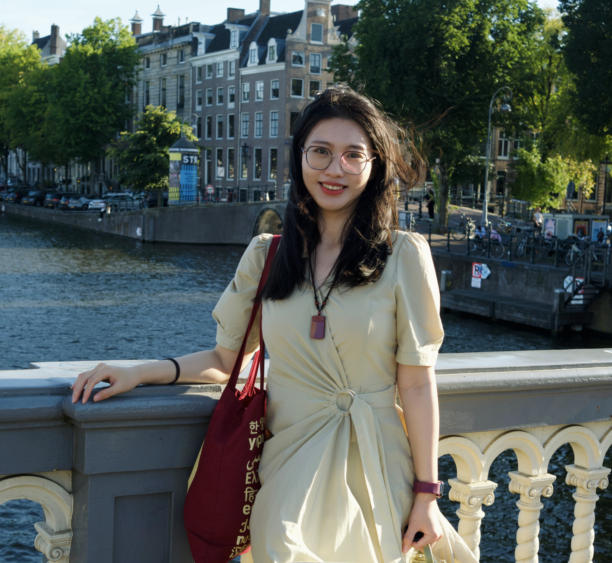

Hi there! I'm Yan Wang, a first-year PhD student in Linguistics at Leipzig University. Previously, I earned an MA in Linguistics from Leipzig University and an MA in Linguistics from The Chinese University of Hong Kong.
As a member of the research unit Cyclic Optimization, I work on the subproject A Cyclic Optimization Approach to the A/A-bar Distinction in Syntax, led by Prof. Dr. Gereon Müller. The project develops a new approach to the A/A-bar distinction in syntax based on Derivational Timing within a strictly cyclic derivation. My research focuses on the empirical investigation of interactions between movement types and other syntactic processes in Mandarin Chinese, as well as the formal modeling of these patterns.
Here you can find my CV.
E-mail
y.wang@uni-leipzig.de
wy199856abc@163.com
Address
Institut für Linguistik
Geisteswissenschaftliches Zentrum
Universität Leipzig
Beethovenstrasse 15
04107 Leipzig, Germany

-
Splitting Agree to [φ] and [INDEX]:
Evidence from Chinese Reflexives
October 2026. Talk at the 19th Conference on Syntax, Phonology and Language Analysis (SinFonIJA 19), Universität Graz, Graz. [Slides]
-
Three Types of Mandarin Double-object Constructions
August 2025. Poster presented at the 27th Seoul International Conference on Generative Grammar (SICOGG 27), Sogang University, Seoul. [Poster]
-
Unselective Binder of Wh-dependency under
Optimality Theory
May 2025. Talk at the 77th Studentische Tagung Sprachwissenschaft (StuTS 77), Universität Leipzig, Leipzig. [Slides]
-
The Syntax of the Mandarin Num-Cl P Num-Cl Constructions
January 2024. Poster presented at the Linguistic Society of America 2024 Annual Meeting (LSA 2024), New York City. [Poster]
-
The Syntax of the Mandarin Num-Cl P Num-Cl Constructions
October 2023. Invited talk for LING 5701 A&B Linguistics Research, The Chinese University of Hong Kong, Hong Kong. [Slides]
-
Three Types of Mandarin Double-object Constructions
2025. Proceedings of the 27th Seoul International Conference on Generative Grammar , pp. 271–280. [Paper]
-
The Syntax of Mandarin Num-Cl P Num-Cl Constructions
2024. Proceedings of the Linguistic Society of America , 9(1). [Paper]
-
Overview on China's 14th Five-Year Plans
in the Transport Sector
(with
Sebastian Ibold
and
Yun Xia
)
2022. Deutsche Gesellschaft für Internationale Zusammenarbeit (GIZ) GmbH , Beijing. [Paper]
-
The Comparative Analysis of the Present Situation
between Chinese and Western Rural Areas under
the Cross-cultural Perspective of Socialize Gender Roles
2021. OVERSEAS DIGEST, 2021(9): 8–9.
A collection of moments captured with my Fujifilm X-E4 and iPhone 13.